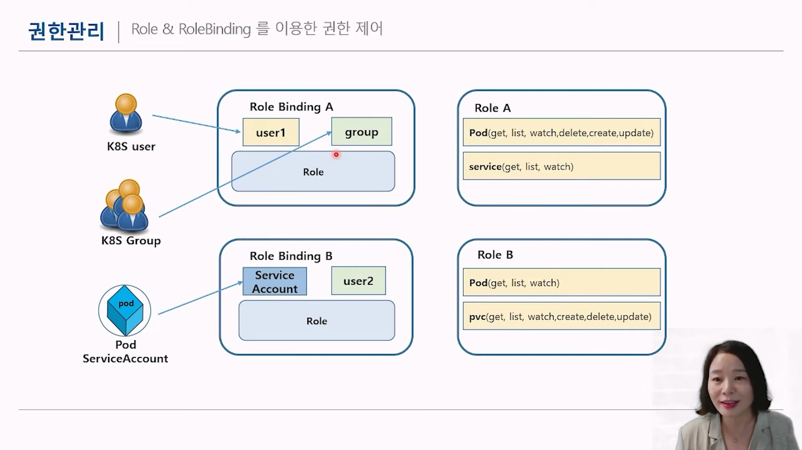

인증과 권한관리
인증편
리눅스에 특정 user계정으로 로그인하여 kubernetes를 실행하고 있다고 생각하겠지만,
실제론 kubernetes 내부 계정이 있고, 해당 클러스터의 권한을 받아서 실행한 것이다.
예를들어 kubectl config view 에서 나오는 context의 "kubernetes-admin"권한으로 실행 중일 수 있다.
📌
인증과 권한관리에는 유저에대한 인증/권한, 파드에대한 인증/권한이 있다.
유저에대한 인증을 롤,롤바인딩이라고 하고
파드에대한 인증을 서비스어카운트라고 한다.
유저에대한 인증을 롤,롤바인딩이라고 하고
파드에대한 인증을 서비스어카운트라고 한다.
| cat ~/.kube/config <--- 쿠버네티스 인증서 내용이 들어가 있다. kubernetes-admin : 쿠버네티스 안에서 최고 권한을 갖는 유저 |
🔍
유저 생성
#create private key
openssl genrsa -out myuser.key 2048 #<-- myuser.key 파일 만들기
openssl req -new -key myuser.key -out myuser.csr -subj "/CN=myuser" #<-- myuser.csr 파일 만들기
#Create CertificateSigningRequest
cat csr-myuser.yaml
apiVersion: certificates.k8s.io/v1
kind: CertificateSigningRequest
metadata:
name: myuser
spec:
request: #일단 여기는 비워두자. 밑에서 조회한 뒤 입력예정
signerName: kubernetes.io/kube-apiserver-client
usages:
- client auth
#줄바꿈문자없이 base64로 인코딩. 여기서 나오는 문자열을 위의 csr-myuser.yaml의 request에 넣어준다
cat myuser.csr | base64 | tr -d "\n"
# myuser 등록
kubectl apply -f csr-myuser.yaml#등록은 되었는데, 허가는 안났다
kubectl get csr
NAME AGE SIGNERNAME REQUESTOR REQUESTEDDURATION CONDITION
myuser 45s kubernetes.io/kube-apiserver-client kubernetes-admin <none> Pending
#Approve certificate signing request
kubectl certificate approve myuser # <--- myuser를 인증 허가한다
#다시 조회해보면 허가된 것을 확인
kubectl get csr
NAME AGE SIGNERNAME REQUESTOR REQUESTEDDURATION CONDITION
myuser 2m37s kubernetes.io/kube-apiserver-client kubernetes-admin <none> Approved,Issued
# myuser.crt 인증서 파일 생성
kubectl get csr myuser -o jsonpath='{.status.certificate}'| base64 -d > myuser.crt서비스어카운트 생성
쿠버네티스 내부적으로 관리되는 account.
특별히 설정하지 않으면, default serviceaccount를 사용
kubectl run testpod --image=nginx
#serviceAccount 쪽에 default라고 선언되어있음을 볼 수 있다
kubectl get pods -o yaml#서비스 어카운트 생성
kubectl create serviceaccount pod-viewer
kubectl get serviceaccounts
kubectl delete pod testpod
cat testpod.yaml
apiVersion: v1
kind: Pod
metadata:
name: testpod
namespace: default
spec:
containers:
- image: nginx
name: testpod
serviceAccount: pod-viewer
kubectl apply -f testpod.yaml
#조회해보면 serviceAccount가 pod-viewer인것을 확인
kubectl get pod testpod -o yaml권한관리편
| 위에서 생성한 사항을 가지고 진행한다 - 유저 myuser - 서비스어카운트 pod-viewer |
Role, Rolebinding
{kind=link}

출처 : 유튜브 따배런 따배쿠 https://www.youtube.com/@ttabae-learn# role 생성
kubectl create role developer \
--verb=create --verb=get --verb=list --verb=update --verb=delete \
--resource=pods
kubectl get role
NAME CREATED AT
developer 2022-12-06T04:57:11Z
# myuser에게 Rolebinding
kubectl create rolebinding developer-binding-myuser --role=developer --user=myuserAdd to kubeconfig
# Add to kubeconfig user
kubectl config view
kubectl config set-credentials myuser \
--client-key=myuser.key --client-certificate=myuser.crt \
--embed-certs=true
kubectl config view # <-- 하단 users: 에 myuser가 등록되었다
#Add to kubeconfig context
kubectl config set-context myuser --cluster=kubernetes --user=myuser
#현재 작업 context 변경하기
kubectl config use-context myuser
kubectl get pods #<------ 됨
kubectl get service #<------ 안됨
kubectl get nodes #<------ 안됨Delete role, rolebinding
#원래 context로 돌아오기
kubectl config use-context kubernetes-admin@kubernetes
#롤바인딩 삭제
kubectl get rolebindings.rbac.authorization.k8s.io
kubectl delete rolebindings.rbac.authorization.k8s.io developer-binding-myuser
#롤 삭제
kubectl get role
kubectl delete role developer
ClusterRole, ClusterRolebinding
 출처 : 유튜브 따배런 따배쿠 https://www.youtube.com/@ttabae-learn
출처 : 유튜브 따배런 따배쿠 https://www.youtube.com/@ttabae-learn📌
Role, Rolebinding → 네임스페이스에서만 유효
ClusterRole, ClusterRolebinding → 모든 네임스페이스에 유효 (클러스터 내)
ClusterRole, ClusterRolebinding → 모든 네임스페이스에 유효 (클러스터 내)
#클러스터 롤 생성
kubectl create clusterrole developer \
--verb=create --verb=get --verb=list --verb=update --verb=delete
--resource=pods
#클러스터 롤바인딩을 myuser에게
kubectl create clusterrolebinding developer-binding-myuser \
--clusterrole=developer --user=myuser
#현재 작업 context 변경하기
kubectl config use-context myuser
kubectl get pods -n kube-system #<--- 됨
kubectl get nodes #<--- 안됨#원래 context로 돌아오기
kubectl config use-context kubernetes-admin@kubernetes
#클러스터롤, 클러스터롤바인딩 삭제
kubectl delete clusterrolebindings.rbac.authorization.k8s.io developer-binding-myuser
kubectl delete clusterrole developer
#config context의 myuser 삭제
kubectl config delete-context myuser
kubectl config delete-user myuser
#삭제 확인
kubectl config view
#서비스어카운트 삭제
kubectl delete serviceaccounts pod-viewer
☝
kubectl get clusterrole 해보면, 수많은 클러스터롤이 나오는데
이중에 view라던지, cluster-admin이라던지 기존에 있는 클러스터롤을 활용할 수 있다.
kubectl describe clusterrole view
kubectl describe clusterrole admin
kubectl describe clusterrole cluster-admin
이중에 view라던지, cluster-admin이라던지 기존에 있는 클러스터롤을 활용할 수 있다.
kubectl describe clusterrole view
kubectl describe clusterrole admin
kubectl describe clusterrole cluster-admin